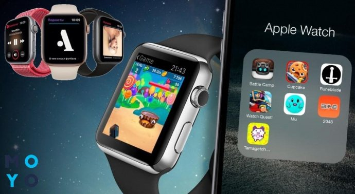

Apple Watch
«Описание товара»
{kind=link}
Apple Watch — наручные часы с дополнительной функциональностью (умные часы), созданные корпорацией Apple и представленные 9 сентября 2014 года. Для их полноценной работы требуется смартфон семейства iPhone 5 или новее.
«Характеристики товара»
| Дисплей | Процессор | Операционная система |
|---|---|---|
| Гибкий Retina Amoled дисплей Укрепленный Ion-X glass (Apple Watch Sport) | Apple S1, Apple S2, Aррle S3, Apple S4, Apple S5 | watchOS |
|  | ||
| Часы имеют интерфейс NFC и позволяют производить бесконтактную оплату с помощью системы Apple Pay. | ||
- Дисплей часов (два варианта: 1,32-дюймовый в 38-мм модели (272 × 340 пикселей, 326 ppi) или 1,5-дюймовый в 42-мм версии (312 × 390, 326 ppi)) OLED-типа, защищённый сапфировым стеклом, способен различать нажатия и прикосновение[2]. Чувствителен к силе нажатия (технология Force Touch).
- Органы управления: часы оснащены круговым колёсиком Digital Crown на боковой грани и продолговатой кнопка-качалкой под ним. Колёсико служит для прокрутки или увеличения; нажатие на него позволяет вернуться к домашнему экрану. Кнопка-качалка служит для вызова 12 избранных абонентов, которым можно позвонить или отправить сообщение (если нужного человека там нет, можно перейти ко второму способу его поиска — в телефонной книге, вращая Digital Crown).
- С левой стороны — прорези динамика и микрофона. На нижней стороне часов могут быть расположены фотодиоды для измерения пульса. За вибрацию отвечает привод линейного перемещения Taptic Engine, его воздействие (о поступлении уведомлений и т. п.) похоже на лёгкое постукивание по запястью.
- Часы не имеют разъёмов, подзарядка батареи (ёмкость 205 мАч) производится с помощью индуктивного адаптера с магнитными фиксаторами. Рекомендуется ежесуточная зарядка часов[3], полная зарядка длится около двух часов; при этом батарея за 1000 циклов перезарядки потеряет не более 20 % от изначальной ёмкости[4]. В одном из пазов имеется некий технологический порт, прикрытый заглушкой (назначение его точно пока неизвестно — предполагают, что это разъем для ускоренной зарядки, который можно будет использовать позже).
- В Apple Watch нет привычной печатной платы, вместо неё используется так называемая «система-в-корпусе» (SiP, System in Package) Apple S1 (все необходимые для работы часов элементы упакованы в маленький металлический «коробок», в нём спрятаны процессор, чип ОЗУ, чип NAND флеш-памяти, датчики[5]). В часы встроен накопитель объёмом 8 Гб, из которых пользователю доступно чуть больше 6 Гб.
- Камеры нет, зато устройство можно использовать в качестве удаленного видоискателя iPhone. Собственного GPS-приёмника у часов оригинальной серии нет (добавлен в Series 2), они используют навигационные ресурсы телефона, связываясь с ним по Bluetooth 4.0 и Wi-Fi 802.11b/g[6][7].
- Часы имеют интерфейс NFC и позволяют производить бесконтактную оплату с помощью системы Apple Pay. Имеется гироскоп и акселерометр. Согласно спецификациям, часы соответствуют стандарту IPX7 и способны выдержать 30-минутное погружение в воду на глубину до одного метра. Операционная система watchOS имеет интерфейс, напоминающий таковой в iOS, но с круглыми иконками[8].